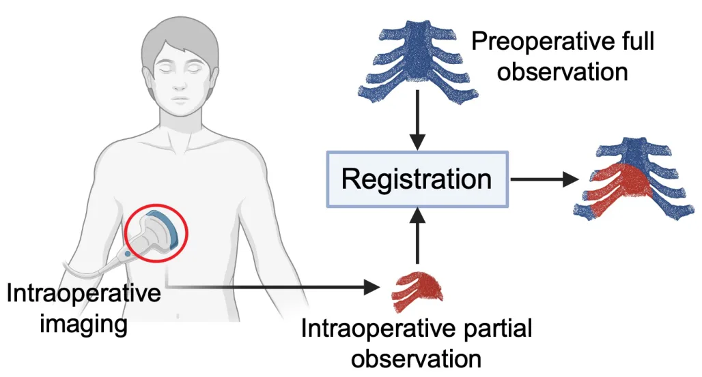
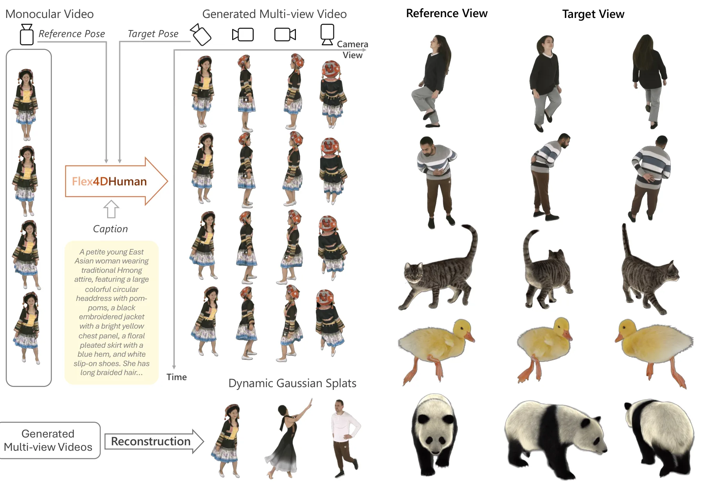
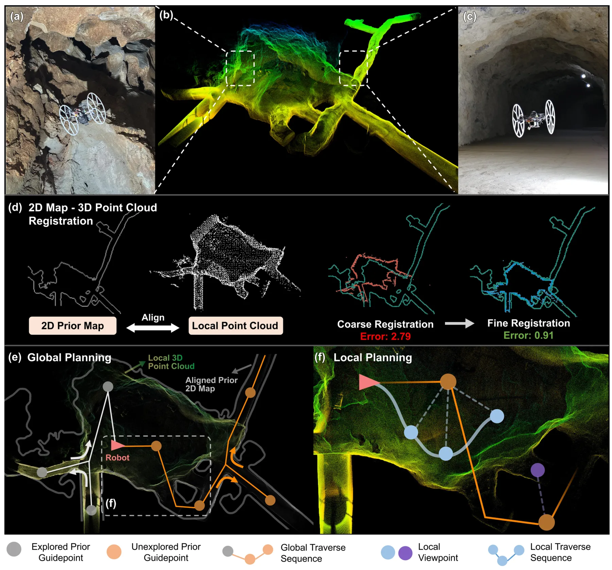

静态网页 · 2026-06-13
SLAM/GNSS/三维重建每日论文阅读
按评分、截图和中文摘要快速筛选当天候选；需要原文时可切换 English。
候选论文：3 推荐论文：3 新论文：3 仓库：40 新仓库：10
今日概览 今天有 3 篇新增 arXiv 论文 ，网页/简报推荐 3 篇，低于 10 篇上限；另外 9 篇历史重复论文已过滤 。论文主题集中在三条线：面向部分重叠/非均匀密度的点云配准、单目/稀疏多视角视频到动态 4DGS 的人体重建，以及利用粗糙 2D 先验地图提升 LiDAR-UAV 探索效率。
与用户重点方向最贴近的是 Explore From Sketch ：它把 2D-3D 点云配准、LiDAR 探索、先验地图不确定性和层次化视点规划放在同一框架中，直接涉及无人机 SLAM/规划闭环。GAPR-Net 虽是手术骨骼场景，但在 partial-to-full 点云配准、低重叠和噪声鲁棒性方面可借鉴。Flex4DHuman 更偏 4D 内容生成/4DGS 后处理，对动态人体场景重建和仿真资产生成有价值，但不是定位前端。
GNSS/RTK/PPP/PPP-RTK、整数模糊度、NLOS/多路径或因子图紧耦合论文今天无新增；仓库侧则出现了 GNSS positioning engine、Swift GNSS/SDR/NTRIP 库、手机 camera/IMU 到无人机 VIO 输入链路、以及 ORB-SLAM3 + Gaussian Splatting 的 XR pipeline 等线索。

新论文 · 日期 2026-06-11 · score 9 · cs.CV
作者：Siyu Zhou, Zhongliang Jiang
评分 8.5/10
点云配准 Partial-to-Full Transformer 局部几何描述子 手术导航
一句话工作总结： GAPR-Net 用变换不变的点级局部几何特征和 cross-attention 改善 partial-to-full 点云配准，在骨骼手术场景达到毫米级 RMSE。
部分到完整点云配准在重叠率变化、点密度波动和噪声存在时仍然困难。虽然 Transformer 在点云处理中表现出潜力，但已有方法常把它限制在全局上下文聚合，忽略了建立精确对应所需的细粒度局部几何。本文提出 GAPR-Net，一个结合卷积与 Transformer 模块的 coarse-to-fine 学习式点云配准框架，并通过 cross-attention 在 partial 与 full 点云之间融合局部和全局…
Partial-to-full registration remains challenging due to varying overlap ratios, fluctuating point densities, and the presence of noise. While transformers have shown strong potential for point cloud processing…

新论文 · 日期 2026-06-12 · score 8 · cs.CV, cs.GR
作者：Jen-Hao Cheng, Yipeng Wang, Hao Zhang, Gengshan Yang
评分 7.4/10
4D 重建 视频扩散 4D Gaussian Splatting 相机位姿条件 动态人体
一句话工作总结： Flex4DHuman 用相对相机位姿条件的视频扩散生成同步多视角视频，再接 4DGS 重建动态主体，降低了显式几何先验依赖。
本文提出 Flex4DHuman，一个多视角视频扩散模型，可将单目或稀疏多视角动态主体视频转换为同步 dense multi-view videos，并且只依赖相对相机位姿条件。不同于依赖骨架、深度、法线或目标视角几何渲染的人体方法，Flex4DHuman 不需要显式几何先验，而是通过相对相机位姿位置编码控制生成；生成视频可直接输入下游重建管线生成动态 4D Gaussian splats。方法基于 Wan 2.1…
We present Flex4DHuman, a multi-view video diffusion model that transforms a monocular or sparse multi-view video of a dynamic subject into synchronized dense multi-view videos using only relative camera-pose…

新论文 · 日期 2026-06-10 · score 4 · cs.RO
作者：Tiancheng Lai, Yuman Gao, Xiangyu Li, Ruitian Pang
评分 8.3/10
UAV 探索 LiDAR SLAM 2D-3D 配准 先验地图 不确定性规划
一句话工作总结： 该框架把粗糙 2D 先验地图与 LiDAR 观测做 2D-3D 配准，并在多假设不确定性下规划 UAV 探索路径，显著提升探索效率。
大尺度、拓扑复杂环境中的 UAV 自主探索常因调度次优和绕行导致效率低。施工图等先验地图虽然通常不精确、稀疏、未对齐甚至存在缺陷，但可提供全局结构引导。本文提出一个利用稀疏、未对齐且可能不一致的 2D 先验地图进行 LiDAR-UAV 探索的框架。首先，方法构建稳健 2D-3D 点云配准管线：用 GeoContext 描述子做单帧候选检索，用多帧验证进行带离群剔除的粗变换估计，并用 Scale-ICP refine…
Autonomous exploration with UAVs in large-scale, topologically complex environments often suffers from low efficiency due to suboptimal scheduling and detours. Prior maps (e.g., construction drawings), althoug…
精选仓库/项目
默认显示 8 个精选；新仓库、高分仓库和 GNSS/GPS/RTK 相关仓库优先，可展开查看完整候选。
新项目 · C++ · ★ 2 · 更新 2026-06-12 · score 5
新项目 · Swift · ★ 0 · 更新 2026-06-12 · score 5
Topics：gnss, gps, sdr
shuwang1/Orientable-libgnss-ntrip A Swift 6 port and evolution of the original Orientable AI internal project for NTRIP. It provides a type-safe, asynchronous framework for streaming Global Navigation Satellite System (GNSS) correction data.
新项目 · Swift · ★ 0 · 更新 2026-06-12 · score 4
新项目 · Python · ★ 0 · 更新 2026-06-13 · score 7
新项目 · Python · ★ 0 · 更新 2026-06-12 · score 7
新项目 · Python · ★ 0 · 更新 2026-06-12 · score 6
Topics：docker, sfm
新项目 · C++ · ★ 0 · 更新 2026-06-12 · score 4
Kartikdangi1/phone-drone ROS2 pipeline turning phone camera/IMU into drone VIO (visual-inertial odometry) input — Docker-based dev env, launch files for phone streaming + VIO + full pipeline.
新项目 · Python · ★ 0 · 更新 2026-06-12 · score 3
还有 32 个候选仓库
新项目 · C++ · ★ 0 · 更新 2026-06-12 · score 3
ingon1026/xr-splat Decoupled SLAM × Gaussian Splatting pipeline for photorealistic XR spaces (ORB-SLAM3 + gsplat)
新项目 · Python · ★ 0 · 更新 2026-06-12 · score 2
HTML · ★ 820 · 更新 2026-06-12 · score 14
Topics：autoware-compatible, benchmarking, gnss, lidar, lidar-slam
rpng/MINS An efficient and robust multisensor-aided inertial navigation system with online calibration that is capable of fusing IMU, camera, LiDAR, GPS/GNSS, and wheel sensors. Use cases: VINS/VIO, GPS-INS, LINS/LIO, multi-sensor fusion for localiz…
C++ · ★ 712 · 更新 2026-06-12 · score 11
Python · ★ 168 · 更新 2026-06-12 · score 10
Topics：c-plus-plus, gnss, localization, positioning, ppp
3D-Vision-World/awesome-NeRF-and-3DGS-SLAM A comprehensive list of Implicit Representations, NeRF and 3D Gaussian Splatting papers relating to SLAM/Robotics domain, including papers, videos, codes, and related websites
★ 2034 · 更新 2026-06-10 · score 20
Topics：3dgs, awesome, gaussiansplatting, lidar-slam, nerf
kurajulii/slamAI-istanbulCanyon Enhance drone navigation with robust Visual Odometry and SLAM for urban canyons, focusing on realistic İstanbul environments and machine learning solutions.
Python · ★ 1 · 更新 2026-06-12 · score 11
Topics：airsim, computer-vision, drone, localization, mapping
colmap/colmap COLMAP - Structure-from-Motion and Multi-View Stereo
C++ · ★ 11906 · 更新 2026-06-12 · score 10
Topics：computer-vision, geometry, multi-view-stereo, reconstruction, structure-from-motion
rsasaki0109/visloc-rs Pure-Rust visual & visual-inertial SLAM for GPS-denied robots and UAVs — beats ORB-SLAM2's published KITTI ATE on seq00/09, OV2SLAM-class accuracy on EuRoC
Rust · ★ 4 · 更新 2026-06-12 · score 9
Topics：autonomous-driving, bundle-adjustment, colmap, computer-vision, euroc-dataset
★ 1 · 更新 2026-06-09 · score 4
lorenzocl3940/gsd-2 Develop a coding agent that improves task automation by integrating directly with language models for efficient programming workflows.
★ 0 · 更新 2026-06-12 · score 2
Topics：aml, amlx, db2, db2-warehouse, fgo
xeeqr/speed-reader ⚡ Boost your reading speed with this web-based tool using RSVP and ORP, ensuring privacy with offline functionality and EPUB/TXT file support.
JavaScript · ★ 0 · 更新 2026-06-12 · score 2
Topics：blazor, brave-extension, cross-platform-speedreader, ebooks, gnss
y1s3ra150/lidar_inertial_odometry Accelerate LiDAR-Inertial odometry for accurate motion tracking with advanced estimation and efficient data management using pre-computed surfels.
HTML · ★ 1 · 更新 2026-06-12 · score 9
Topics：3d-mapping, 3d-reconstruction, colored-point-cloud, lidar, lidar-camera-synchronization
ainolf/PX4-ROS2-SLAM-Control Integrate PX4, ROS 2, and Gazebo for drone SLAM, mapping, and control with LiDAR and RGBD camera support in simulation.
Python · ★ 14 · 更新 2026-06-12 · score 8
Topics：drl, drone, gazebo, lidar, px4
yeicor/colmap-openmvs-app One-click photogrammetry. Turn photos into 3D models using the latest COLMAP + OpenMVS — no command line needed.
Rust · ★ 8 · 更新 2026-06-12 · score 8
Shell · ★ 4 · 更新 2026-06-12 · score 8
Python · ★ 10 · 更新 2026-06-11 · score 8
Topics：3d-gaussian-splatting, 3d-reconstruction, 3dgs, 3dgs-slam, autonomous-driving
jcevasco2003/f_vigs_slam Este repositorio es para guardar la implementación de mi tesis de Licenciatura en Ciencias de Datos. Implementa un algoritmo de Gaussian Splatting aplicado a SLAM en el marco de ROS2.
C++ · ★ 1 · 更新 2026-06-11 · score 8
Cavilach/lidar_odometry Achieve real-time LiDAR odometry with robust state estimation using Probabilistic Kernel Optimization for SLAM applications.
★ 2 · 更新 2026-06-12 · score 7
Topics：colored-point-cloud, ct-icp, gaussian-splatting, gtsam, iros
Delon123/solidstate-lidar-slam Adapt solid-state LiDAR for SLAM and benchmark performance in short-range, small-FoV, and degenerate scenarios robustly.
HTML · ★ 1 · 更新 2026-06-12 · score 7
Topics：buidler, camera-calibration, data-fusion, eth, gatsby-starter-kit
HTML · ★ 313 · 更新 2026-06-12 · score 6
Topics：deep-learning, gaussian-splatting, lio, slam, vio
C++ · ★ 15 · 更新 2026-06-12 · score 6
quantroninblue/semantic_spacial_mapping Modular semantic spatial mapping framework integrating RGBD perception, semantic segmentation, visual odometry, world-frame geometry accumulation, and persistent spatial reasoning for robotics applications.
Python · ★ 0 · 更新 2026-06-12 · score 5
Python · ★ 1 · 更新 2026-06-12 · score 4
C++ · ★ 0 · 更新 2026-06-12 · score 4
Python · ★ 0 · 更新 2026-06-12 · score 4
JavaScript · ★ 0 · 更新 2026-06-12 · score 3
JavaScript · ★ 0 · 更新 2026-06-10 · score 3
Topics：3d-reconstruction, gaussian-splatting, github-pages, machine-learning, portfolio
maxefe7476/Axioma_robot Build and explore an autonomous 4WD robot using C++, Python, ROS2, and Gazebo for advanced navigation and mapping capabilities.
Python · ★ 4 · 更新 2026-06-12 · score 2
Topics：amcl, arduino, autonomous-navigation, autonomous-robots, cpp
cawkei/TTT3R Enhance 3D reconstruction with TTT3R, a test-time training method that boosts length generalization and improves performance for CUT3R applications.
Python · ★ 2 · 更新 2026-06-12 · score 2
Topics：3d-reconstruction, rnn-model, slam
aryanssargiyas-rgb/Axis Enhance your shell with a fast, local-first runtime that improves navigation, prompts, and command history without any setup.
★ 0 · 更新 2026-06-12 · score 2
Topics：alert, css, gtsam, illusion, lidar
leiverkus/effigies NodeODM-compatible WebODM engine: COLMAP sparse + full OpenMVS chain (ReconstructMesh/RefineMesh) for close-range photogrammetry
Python · ★ 0 · 更新 2026-06-12 · score 2
静态站点 · 不依赖 npm/React/CDN · 每日自动生成